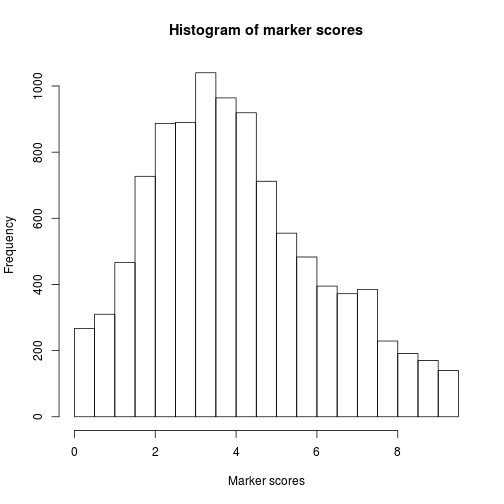

Marker gene list for Human tissues created from the
VeryGene dataset. Genes are ordered
according to their specificity index.
Note that according to the VeryGene paper, tissue
specific gene sets in this list are not
disjoint, and "express selectively in approximately two
tissues on average". This can be important when used in
deconvolution methods that require disjoint sets of
marker genes. Duplicates accross tissue types can be
removed using the function rmDuplicated or
by filtering on the specificity score, e.g., ml[ ml
>= 8].
vg <- MarkerList('VeryGene')# marker sets are not disjointhasDuplicated(vg)[1] 32# show historgram of specificity scoreshist(vg)
# filter on scoresvg2 <- vg[vg >= 8, drop=TRUE]summary(vg2)